Corporate Social Responsibility
Developing people and supporting communities
At GS Builder & Engineers, we believe that developing people and supporting communities are essential to building a sustainable future. Through our CSR initiatives, we invest in graduate development, sustainability, employee wellbeing, and community engagement to create positive long-term outcomes both within our organisation and across Pakistan. Built around four core pillars — Graduate Pathways, Seeds of Sustainability, Seeds of Care, and Employee Wellbeing — our programs support future talent, strengthen partnerships, and encourage responsible growth throughout the construction industry.
Our Graduate Pathways Program
The Graduate Pathways Program was created to help emerging civil engineers bridge the gap between academic study and professional practice. As a full-time employment and development program, it provides graduates with structured exposure to live projects, multidisciplinary teams, and the day-to-day realities of the construction industry. Designed around practical learning, mentoring, and guided development, the program enables participants to build technical knowledge, professional confidence, and a broader understanding of how projects are delivered. Originally launched as a pilot initiative in 2025, the program continues to evolve and now includes multiple career pathways across the GS Group, supporting the development of future talent for both the construction and manufacturing sectors.
Meet Our Current Cohort 2026
Every Graduate Pathways journey begins with a first step. Our current cohort represents the next generation of engineering talent beginning their professional careers within GS Group. Through structured learning, project exposure, and cross-functional development, each participant is gaining practical experience across a range of disciplines while building the knowledge, skills, and confidence needed to succeed in the construction industry.
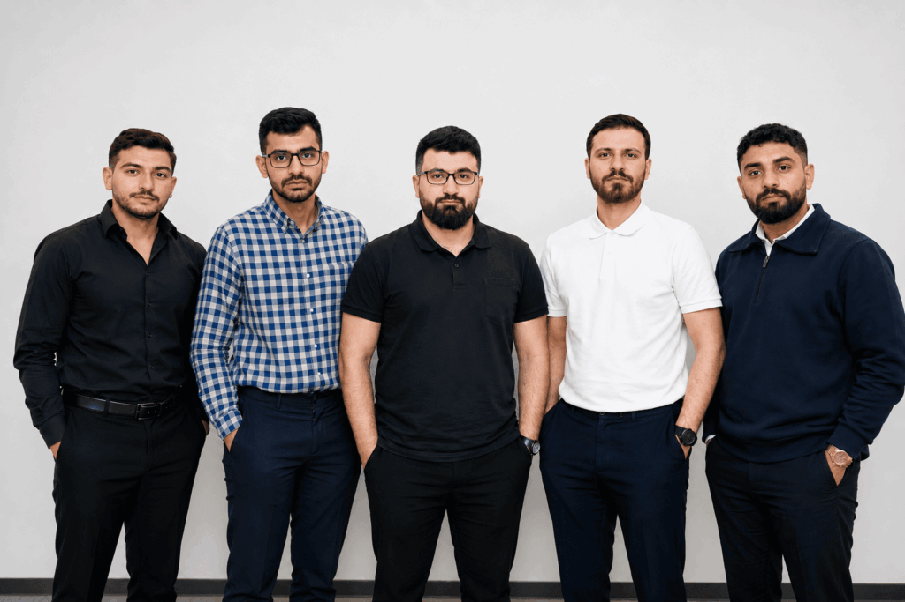
University Partnerships and Engagement
Building University Connections
We work closely with universities across Pakistan to support the development of future engineering talent. Through career fairs, guest lectures, industry engagement, research collaboration, networking events, and graduate recruitment initiatives, we help students gain valuable insight into professional careers within the engineering, construction, and manufacturing sectors.
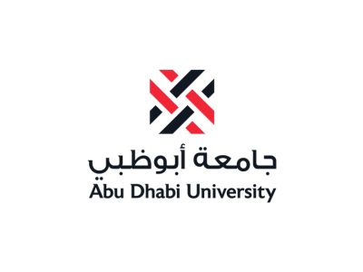
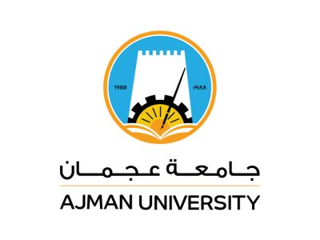
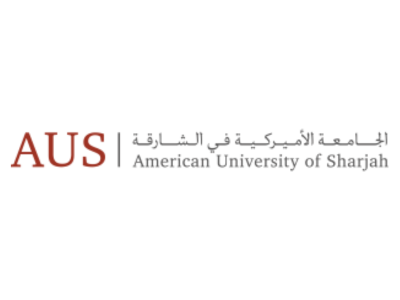
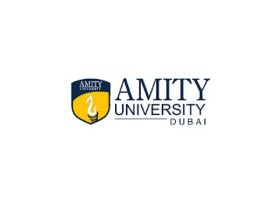
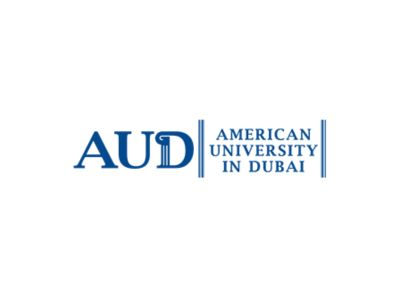
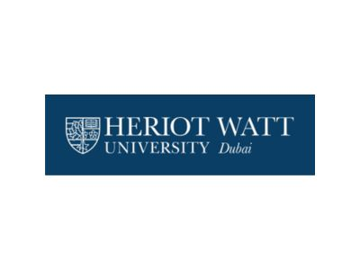
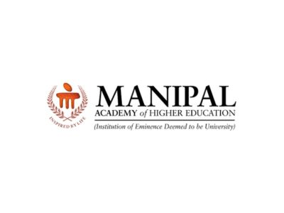
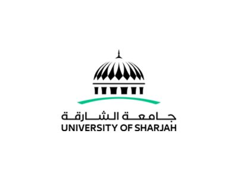
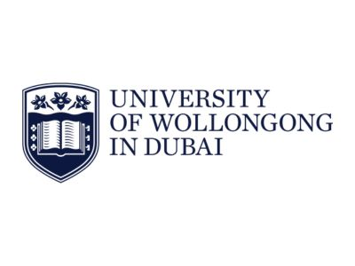
These partnerships enable us to share industry knowledge, identify emerging talent, and create opportunities for students and graduates to connect with professionals across the GS Group.
Apply Now
- • Eligibility Criteria. Applicants should:
- – Be completing an Engineering degree by September 2026, or have graduated no earlier than September 2024.
- – Be eligible to work in Pakistan at the time of employment.
- • Engineering majors: Civil, Production, Industrial, Mechanical, Electrical, Digital and Architectural Engineering.
- • Next Graduate Pathways Program Commencement Date for Civil Engineers: Monday, 14th September, 2026.
- • Program Tracks for other Engineering Majors Commencing: Monday, 26th October, 2026
Our Seeds of Sustainability Program
Small Seeds Grow Big Futures. Seeds of Sustainability was created to inspire future generations to think differently about sustainability, innovation, and their relationship with the environment. Through age-appropriate learning experiences, creative projects, and real-world examples, the initiative encourages students to explore topics such as responsible resource use, material innovation, circular economy principles, and environmental stewardship. Inspired by DesertBoard's PSB® innovation and supported by GS Group companies, the program connects sustainability education with practical action, helping young people understand how small ideas and everyday choices can contribute to a more sustainable future.
School Partnerships and Engagement

Sustainability Workshop for 8-year-olds
Created by engineers. Delivered by teachers. Seeds of Sustainability is a teacher-led workshop for young students across Islamabad. Through storytelling, hands-on activities, and creative learning, students explore sustainability, innovation, and how everyday actions can make a positive difference. Inspired by DesertBoard's journey from date palm waste to PSB® innovation, the workshop combines teacher training, classroom resources, and our Desert Palm Guardian characters to bring sustainability concepts to life in a fun and engaging way.
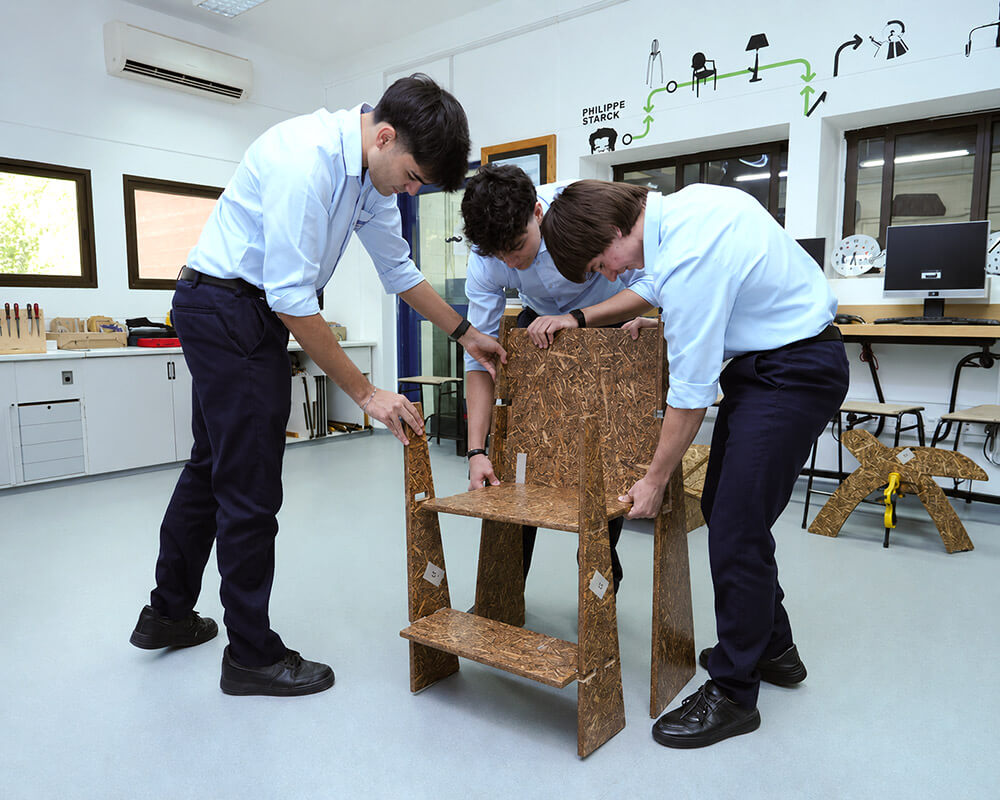
Working with DesignTech Senior Students
Future Designers, Real Materials. In partnership with local colleges, students were challenged to design and develop flat-pack furniture using DesertBoard's PSB® panels. The project combined sustainability, design thinking, engineering principles, and practical problem-solving, giving students the opportunity to explore how innovative materials can be transformed into functional products. By connecting classroom learning with real-world applications, the project encouraged creativity, collaboration, and sustainable thinking.
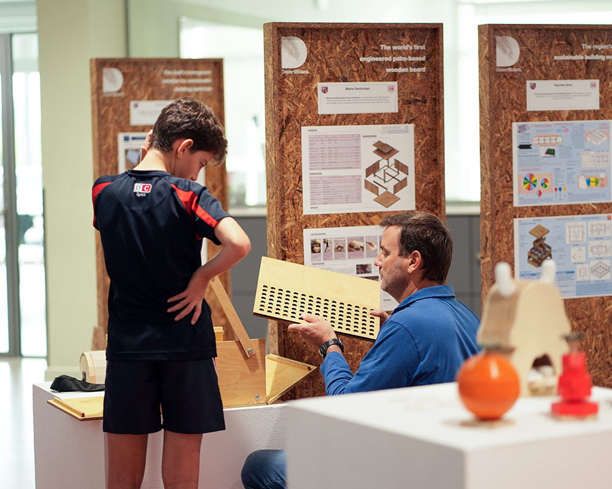
Borrow PSB Display Boards
Supporting Sustainability Learning. Schools and educational institutions can borrow our reusable PSB® display boards for exhibitions, sustainability events, open days and student showcases. Manufactured from DesertBoard's sustainable PSB® panels, they provide a practical way to promote environmental awareness while showcasing student learning and innovation.
Ready to Get Involved?
Inspiring the Next Generation. Bring Seeds of Sustainability to your school. Enquire today to discuss how we can support your students and learning goals.
Volunteering in Local Communities
Caring Beyond Construction. Seeds of Care brings together GS Group's charitable, volunteering, and community outreach activities under a shared commitment to supporting people and communities beyond the workplace. Through partnerships with local organisations, including welfare hospitals and community foundations in Islamabad, fundraising initiatives, employee volunteering, and social impact projects, the program encourages our people to contribute their time, skills, and energy to causes that create lasting positive impact across Pakistan.
Whether supporting children, families, community organisations, or charitable initiatives, Seeds of Care reflects our belief that collective action can help strengthen communities and improve lives.
Our Employee Wellbeing Program
Supporting Our People. At GS Group, we believe that the wellbeing of our people is fundamental to building a positive, resilient, and successful organisation. Through wellbeing initiatives, learning opportunities, social events, awareness campaigns, and employee engagement activities, we support the health, development, and success of our employees both personally and professionally.
From company-wide celebrations and team-building activities to wellbeing workshops and knowledge-sharing sessions, the program promotes collaboration, continuous learning, and a workplace culture where people feel valued, supported, and empowered to perform at their best.
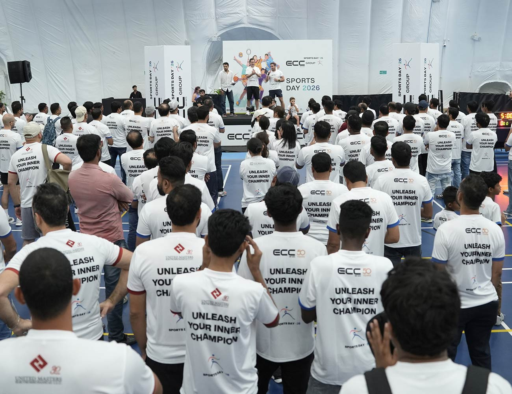
Sports Day 2026
At GS Group, Sports Day is more than a celebration of athleticism—it is an investment in our people. By encouraging teamwork, participation, and healthy competition, we create opportunities for employees to build stronger relationships, enhance physical and mental wellbeing, and strengthen a culture of collaboration. These shared experiences foster resilience, boost morale, and reinforce the sense of belonging that empowers our people to perform, grow, and succeed together.
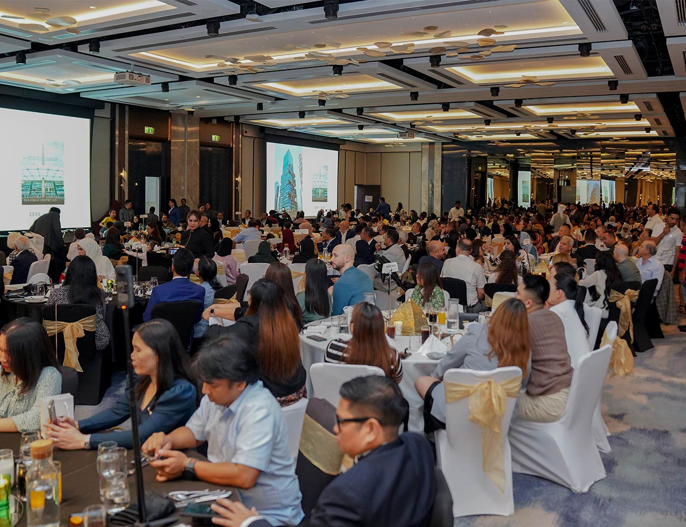
GS Group Iftar Event 2025
The Annual Iftar gathering at GS Group reflects our commitment to inclusivity, unity, and shared values that extend beyond the workplace. By bringing our people together during this sacred time, we foster a sense of belonging, gratitude, and mutual respect. This tradition strengthens interpersonal bonds, nurtures cultural understanding, and reinforces a supportive environment where employees feel valued, connected, and aligned with our collective purpose and wellbeing journey.
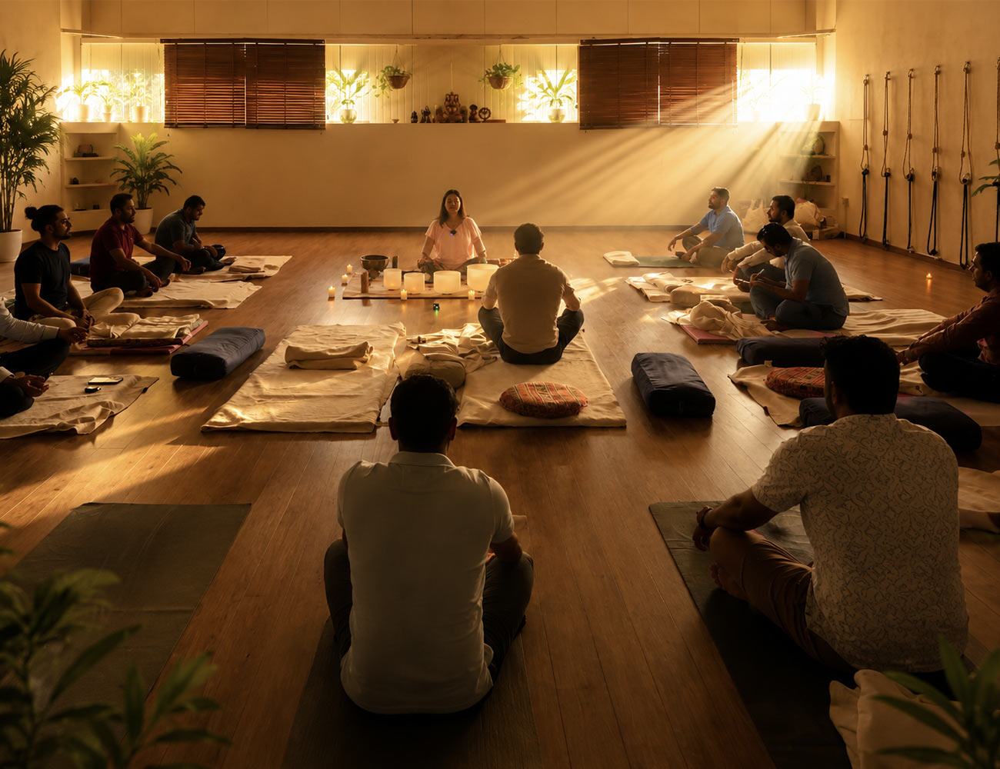
Wellbeing Events
GS Group's Wellbeing Events are designed to nurture holistic health, balance, and resilience among our people. Through initiatives such as guided Nidra Yoga, mindfulness sessions, stress management workshops, and wellness talks, we create space for employees to pause, recharge, and reconnect. These experiences support mental clarity, emotional stability, and physical wellbeing, reinforcing a culture that values care, productivity, and long-term wellbeing as an essential part of our workplace journey.
Together We Build Communities
From graduate pathways to wellbeing initiatives, we invest in people. Want to collaborate with us on our next community program? We'd love to hear from you.
Get in Touch